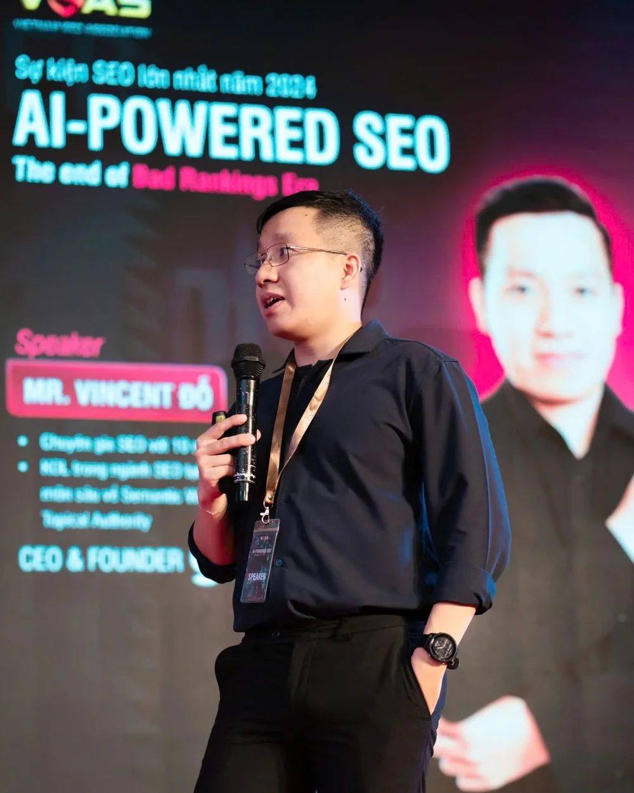
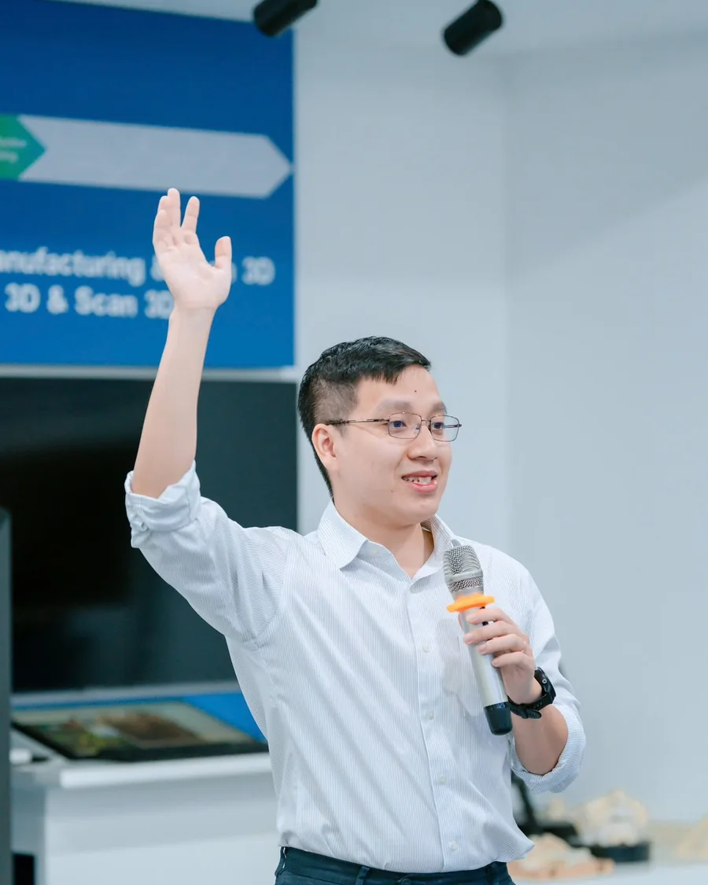
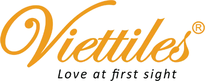
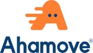

Dựng pipeline nội dung chạy bằng AI Agents cho đội của bạn, trong máy của bạn
Hơn 160 content lead, SEOer và chủ đội content đã học khoá này. Bản 09/2026 chuyển từ bộ prompt sang pipeline 7 phase chạy bằng AI agents, có 3 gate người duyệt.
Khoá tự học cho người chịu trách nhiệm từ 30 bài SEO mỗi tháng. Bạn dựng một pipeline có research, outline, viết, kiểm chứng, brief ảnh, humanize và refresh, chạy bằng skill trong Claude Code, dừng ở ba chỗ cần người duyệt, và ghi trạng thái từng bài vào một bảng. Đội của bạn ra bài đều tay, còn bạn chỉ xuất hiện ở gate.
- Pipeline 7 phase, 3 gate người duyệtiResearch, outline, draft, verify, media, humanize, refresh. Người chỉ duyệt ở outline, ở chỗ kiểm chứng phải sửa, và ở bài cuối trước khi đăng.
- 5 skill content cài vào máy bạniResearch, outline theo Article Methodology, viết semantic, kiểm chứng claim, humanize. Mỗi skill có tiêu chí và version.
- 21 tiêu chí tự chấm bài trước khi đưa người duyệtiAgent tự chấm draft theo 21 tiêu chí W1 đến W21: bám outline, không từ sáo rỗng, tỷ lệ bullet, internal link, đoạn trả lời đứng trước.
- Cập nhật ngay khi công cụ AI đổiiMỗi khi có thay đổi về AI trong khoá, phần liên quan được cập nhật ngay sau đó, kèm ghi chú thay đổi. Video xem trọn đời.
- Tên trước đây: AI Automation Content SEO. Học viên cũ vào học chương mới theo chính sách cập nhật.

Khoá xét theo sản lượng, không theo số năm: bạn cần hai điều này
Đội hoặc chính bạn phải ra từ 30 bài SEO mỗi tháng, hoặc 10 đến 29 bài với nhiều người viết, nhiều định dạng, QA phức tạp.
Đã hiểu search intent, content brief và quality gate. Khoá không dạy lại SEO nền; cần chiến lược tổng thể thì học Blueprint.
- 160+học viên đã học khoá này
- 7phase trong pipeline
- 3gate người duyệt
- 5skill content có version
- 21tiêu chí tự chấm bài
Đội bạn viết được, nhưng ra bài không đều và không kiểm được?
Những người tìm đến khoá này không thiếu người viết. Họ thiếu một dây chuyền để bài ra đều, chất lượng không phụ thuộc từng người, và có chỗ để dừng lại kiểm trước khi đăng.
- 01
Mỗi người viết một kiểu, sếp sửa đến bài thứ ba là nản
Brief nằm trong tin nhắn, outline trong đầu người viết, tiêu chuẩn trong kinh nghiệm của người duyệt.
Bài đầu ổn, bài sau lệch giọng, bài thứ ba sai cấu trúc. Người duyệt thành nút thắt của cả đội.
- 02
Dùng AI viết nhanh nhưng sửa còn lâu hơn tự viết
AI ra bài trong hai phút, đúng dàn ý mà sai sự thật, lệch intent, đầy từ sáo rỗng.
Không có bước kiểm chứng và humanize, nên đội mất thời gian đọc lại từng câu, và không dám đăng.
- 03
Sản lượng tăng thì chất lượng tụt
Tháng cần 30 bài, đội ra 12. Cố ép lên 30 thì bài mỏng, trùng nhau, không được Google chấp nhận.
Không ai biết bài nào đang ở bước nào, bài nào chờ ai; kế hoạch tháng trôi sang tháng sau.
- 04
Bài cũ rớt dần mà không có quy trình làm mới
Hàng trăm bài đã đăng, một phần rớt traffic, một phần lỗi thời, một phần ăn thịt nhau.
Refresh bằng cảm tính: viết lại cả bài, mất luôn phần đang xếp hạng. Không có diff, không có kế hoạch theo section.
Bấm “Đúng với tôi” ở những vấn đề bạn đang gặp để xem khoá này giải quyết được gì cho bạn.
Bạn dựng một pipeline 7 phase chạy bằng skill trong máy của mình: agent research, lập outline, viết, tự chấm 21 tiêu chí và kiểm chứng claim, dừng ở ba gate để người duyệt, rồi humanize và refresh theo section. Trạng thái từng bài nằm trong một bảng, ai cũng đọc được.
Đăng ký họcTheo bài “Máy lọc nước cho chung cư: chọn loại nào” từ ý tưởng đến publish
Mỗi phase một vai, một skill và một artifact. Người chỉ xuất hiện ở ba gate. Đóng máy giữa chừng, mở lại vẫn biết bài đang ở đâu.
Ví dụ minh hoạ trên một bài giả định. Số trong các thẻ là ví dụ về định dạng đầu ra của từng phase, không phải số đo từ dự án thật.
- 1 · Research
- 2 · Outline
- Gate 1
- 3 · Draft
- 4 · Verify
- Gate 2
- 5 · Media brief
- 6 · Humanize
- Gate 3
- 7 · Refresh
Đọc SERP, gom câu hỏi, tìm chỗ chưa ai viết
Vai: researcher · skill seo-research
Skill đọc các bài đang xếp hạng, gom keyword phụ và câu hỏi thật của người mua, rồi chỉ ra gap. Không có gap thì không viết.
Outline theo Article Methodology, tự chấm 19 tiêu chí
Vai: analyst · skill semantic-outline-methodology
Outline có phần chính và phần bổ trợ, câu trả lời đặt đầu mỗi mục. Skill chấm 19 tiêu chí trước khi tới người, nên người chỉ đọc chỗ cảnh báo.
Vài phút. Sửa góc bài, bỏ mục thừa, hoặc bỏ cả bài. Chưa duyệt thì agent không viết.
duyệt outline
Viết theo Source Context, gắn nguồn ngay khi viết
Vai: writer · skill semantic-content-writing
Writer đọc bộ file context trước khi viết. Mỗi số và claim mang nhãn nguồn hoặc nhãn “cần kiểm”. Checklist 21 tiêu chí W1 đến W21 chạy cuối phase.
Kiểm từng số với nguồn. Sai thì sửa trước khi ai chạm giọng văn
Vai: verifier · skill claim-verifier
Skill đối chiếu từng claim với file context và nguồn ngoài: Pass, Flag hoặc Correct. Có Correct là pipeline dừng, báo cáo ngắn để người quyết ở gate 2.
Quyết claim nào giữ, claim nào bỏ. Số sai sửa ở đây, không đợi khách phát hiện.
duyệt log kiểm chứng
Ảnh, bảng, alt text đặt đúng chỗ theo outline
Vai: analyst · skill media-brief
Mỗi H2 một brief: cần ảnh gì, bảng gì, alt text ra sao. Designer hoặc AI ảnh nhận brief, không nhận cả bài.
Chạm câu, không viết lại. Cấu trúc semantic giữ nguyên
Vai: editor · skill humanizer
Skill chỉ sửa câu nghe “quá AI”: mở đầu chung chung, ba vế song song, tính từ rỗng. Mỗi thay đổi hiện dưới dạng diff để người duyệt thấy đúng chỗ đổi.
Người ký. Log ghi ngày, version, ai duyệt. Bài vào index với trạng thái humanized, chờ đăng.
duyệt publish
Bài lên rồi vẫn nằm trong index
Chạy song song · skill content-update-orchestrator
Định kỳ, skill quét decay và cannibalization từ GSC, xếp bài nào tới lượt. Refresh làm theo diff và section, không viết lại từ đầu.
Blueprint giúp bạn làm đúng chiến lược. Agentic Content SEO giúp đội ra bài đều tay.
Ba khoá nối tiếp nhau chứ không thay thế nhau. SEO & GEO Blueprint của GTV SEO Academy dạy bạn dựng bản thiết kế cho một website. Agentic Content SEO nhận content strategy từ bản thiết kế đó và biến việc sản xuất bài thành pipeline chạy bằng AI agents. Agentic SEO & GEO bao cả hệ tìm kiếm: kiến trúc, technical, authority, GEO.
| SEO & GEO Blueprint (GTV SEO Academy) | Agentic Content SEO (The AI Growth) | |
|---|---|---|
| Câu hỏi khoá trả lời | Làm SEO & GEO đúng cho một website theo thứ tự nào? | Làm sao để đội ra hơn 30 bài mỗi tháng đúng chuẩn, kiểm được, mà không thêm người? |
| Lợi ích chính | Biết việc gì làm trước, việc gì bỏ, đo bằng gì | Bài ra đều tay, chất lượng đồng đều, người chỉ duyệt ở gate |
| Cách học | 9 buổi offline cùng giảng viên, làm bài trên website của bạn | Tự học theo nhịp của bạn: video, tài liệu, repo, livestream hỏi đáp định kỳ, nhóm học viên |
| Công cụ AI | 16 skill theo từng buổi, dùng trong Claude | Pipeline 7 phase và 5 skill content cài vào Claude Code, ba chế độ chạy |
| Ai học | Người làm SEO 6 tháng đến 3 năm, marketer, chủ doanh nghiệp cần một bản thiết kế đúng | Content lead, SEO lead, chủ agency, freelancer đa định dạng, đội in-house từ 30 bài mỗi tháng |
| Đầu ra | Final SEO & GEO Blueprint và lộ trình 90 ngày | Repo brand đã setup, một bài chạy hết pipeline, bảng sản lượng và QA cho đội |
Chưa có content strategy hoặc topical map cho website? Học SEO & GEO Blueprint trước. Cần cả kiến trúc, technical, GEO và mở rộng thì xem Agentic SEO & GEO.
Kết thúc khoá, pipeline nội dung nằm trong máy của bạn
Bạn không mang về một bộ prompt để copy dán. Mọi thứ dưới đây là thư mục, file và skill trên máy của bạn: người trong đội mở lên là biết bài nào đang ở bước nào và việc kế tiếp là gì.
Video xem trọn đời. Skill, template và pipeline được cập nhật ngay khi công cụ AI đổi, trong thời hạn 6 tháng, kèm ghi chú thay đổi.
Repo content của thương hiệu bạn, chạy được
Một thư mục theo 7 phase với file bối cảnh thương hiệu, giọng viết, ranh giới không hứa; bảng index ghi trạng thái từng bài; lệnh một dòng để chạy bài mới, chạy theo template, hoặc chạy một phase cho nhiều bài.
5 skill content và bộ tiêu chí
Research, outline theo Article Methodology, viết semantic, kiểm chứng claim, humanize. Kèm 19 tiêu chí duyệt outline và 21 tiêu chí W1 đến W21 để agent tự chấm draft trước khi đưa bạn.
Một bài đi hết pipeline và bảng sản lượng cho đội
Capstone: bạn chạy một bài thật của thương hiệu mình qua 7 phase, có log ở từng gate. Kèm bảng theo dõi sản lượng, QA và refresh để bạn điều hành đội theo số, không theo cảm giác.
Bốn thứ nằm trong máy bạn sau khi cài pipeline
Bấm vào ảnh để phóng to. Ảnh chụp từ chính pipeline content đang vận hành cho thương hiệu The AI Growth, bản học viên nhận cùng cấu trúc.
Skill, tiêu chí và file context mà khoá dựa trên
Đây là lớp phương pháp của pipeline content đang vận hành hằng ngày, rút thành skill, checklist và template để bạn cài vào máy của mình.
Agentic Content SEO phù hợp với ai?
Khoá xét theo sản lượng và trách nhiệm, không theo số năm hay nơi bạn ở. Khoá học online nên bạn ở tỉnh thành nào cũng theo được; điều kiện là bạn đang trực tiếp làm hoặc duyệt bài mỗi tuần. Nếu điểm nghẽn của bạn là chiến lược tổng thể, audit hay backlink, hai khoá còn lại hợp hơn.
Content lead, SEO lead
Bạn quản lý người viết, phải ra từ 30 bài mỗi tháng, và đang là người duyệt cuối của mọi bài. Bạn cần agent chấm trước, bạn duyệt sau.
Chủ agency, đội content thuê ngoài
Bạn nhận nhiều thương hiệu, mỗi thương hiệu một giọng, và cần một pipeline dùng lại được với file context riêng cho từng khách.
Đội in-house ecommerce, bán lẻ, dịch vụ, B2B
Bạn có sản phẩm nhiều, bài cần đều, dữ liệu phải đúng; cần bước kiểm chứng claim và template cho bài sản phẩm, bài so sánh. Chủ doanh nghiệp mua cho đội content cũng bắt đầu từ đây.
Freelancer đa định dạng, marketer kỹ thuật
Bạn viết cho nhiều khách, nhiều loại bài, đã dùng Claude hoặc ChatGPT và muốn nâng từ prompt lên pipeline có gate.
Phù hợp khi bạn đủ 4 trên 5 điều này
- Đội hoặc bạn phải ra từ 30 bài SEO mỗi tháng, hoặc 10 đến 29 bài với QA phức tạp
- Đã có content strategy hoặc topical map, hoặc đang học Blueprint
- Đã dùng Claude hoặc ChatGPT trong công việc từ 3 tháng
- Sẵn sàng làm việc với thư mục, file và cửa sổ lệnh ở mức cơ bản
- Nghẽn ở sản lượng, QA hoặc refresh, không phải ở kiến thức SEO nền
Chưa nên học nếu
- Dưới 10 bài mỗi tháng và chưa có chiến lược nội dung: học SEO & GEO Blueprint trước
- Cần cả kiến trúc website, technical, backlink và đo GEO: Agentic SEO & GEO hợp hơn
- Muốn AI viết và đăng thẳng không ai đọc lại: pipeline này dừng ở ba gate để người duyệt
- Bạn không trực tiếp sản xuất và trong đội cũng chưa có ai chạy pipeline: cho người viết học trước, hoặc lấy nhiều suất cho cả đội
4 phần, 24 module, một pipeline chạy thật trên bài của bạn
Chương trình đi theo đúng thứ tự một pipeline được dựng: nền và file context, từng bước với skill, hệ agentic trong Claude Code, rồi vận hành và mở rộng cho đội.
Mỗi phần mở đầu bằng một câu hỏi thật, đi qua các module, và kết thúc bằng đầu ra bạn làm trên bài và thương hiệu của mình. Kẹt ở đâu, bạn hỏi trong nhóm học viên hoặc ở livestream định kỳ.
- 1Nền và file contextFile context, bảng tự chấm
- 2Từng bước với AI Skills1 bài đạt W1 đến W21
- 3Hệ Agentic với Claude Code1 bài chạy hết pipeline
- 4Vận hành và mở rộngBảng sản lượng, QA, refresh
Chi tiết từng phần
Tự học theo nhịp của bạnVideo và tài liệuLivestream hỏi đáp định kỳNhóm học viên
PHẦN 13 moduleNền: content cho Google và AI Search, source context, search intent
Câu hỏi mở đầu: vì sao bài viết đúng từ khoá, đủ dài, mà Google không chấp nhận và AI không trích?
Bạn học tư duy và tiêu chí content cho cả Google lẫn AI Search, cách viết file source context và giọng thương hiệu để agent viết đúng người, đúng sản phẩm, đúng điều được hứa, và cách nối search intent với loại bài.
- Content cho Google và AI Search: tư duy và tiêu chí
- Source Context và giọng thương hiệu thành file
- Search intent và loại bài
Người quản lý có bảng tự chấm 5 tiêu chí và file ranh giới: điều gì không được hứa trong bài.
PHẦN 27 moduleTừng bước với AI Skills: research, outline, viết, entity, information gain, audit, ảnh
Câu hỏi mở đầu: vì sao cùng một prompt, hôm nay bài tốt, hôm sau bài lệch?
Bạn chạy từng bước bằng skill có tiêu chí: research từ khoá và chủ đề, outline theo Article Methodology, viết semantic content, entity trong bài, information gain, audit content bằng AI, content chuyên biệt và brief hình ảnh. Mỗi bước có đầu ra riêng để kiểm.
- Research từ khoá và chủ đề
- Outline và Article Methodology
- Viết Semantic Content, entity, information gain
- Audit content bằng AI; content chuyên biệt và hình ảnh
Người duyệt có 19 tiêu chí duyệt outline và 21 tiêu chí duyệt draft, không duyệt bằng cảm giác.
PHẦN 37 moduleHệ Agentic với Claude Code: cài, cấu trúc, chạy phase 1 đến 5, programmatic, cập nhật
Câu hỏi mở đầu: vì sao có AI mà đội bạn vẫn copy dán prompt và người duyệt vẫn là nút thắt?
Bạn cài Claude Code, hiểu cấu trúc 7 phase và 3 gate, cài MCP cho workflow, setup repo thương hiệu, chạy một bài thật từ research đến humanize bằng một lệnh, làm programmatic content có cửa chặn, và cách cập nhật workflow khi có bản mới.
- Claude Code 101, cài MCP
- Cấu trúc 7 phase và 3 gate; tour folder, setup brand
- Chạy phase 1 đến 5 trên bài thật bằng một lệnh
- Programmatic content có cửa chặn; cập nhật workflow
Người quản lý đọc bảng index là biết bài nào ở phase nào, ai đang chờ ai.
PHẦN 47 moduleVận hành và mở rộng: QC theo đội, refresh, product content, MCP, skills, n8n
Câu hỏi mở đầu: pipeline chạy rồi, làm sao để đội 5 người dùng chung mà không dẫm lên nhau?
Bạn học content ops và QC theo đội với phân vai và gate duyệt, content refresh theo decay và cannibalization, tự động hoá content sản phẩm, tự setup MCP, Claude Skills cài và ứng dụng, và khi nào dùng n8n, khi nào không. Kèm case pipeline thật đã ẩn tên.
- Content ops và QC theo đội: RACI, gate duyệt
- Content refresh: decay, cannibalization, kế hoạch theo section
- Product content automation, tự setup MCP, Claude Skills
- Khi nào dùng n8n và khi nào không; case pipeline thật
Người quản lý có bảng sản lượng, QA và chi phí theo tháng để quyết mở rộng hay siết lại.
Một lệnh của bạn, bảy phase và ba gate phía sau
Agentic không có nghĩa là AI viết rồi đăng thẳng. Bạn giao việc bằng một lệnh; agent đọc file context, chạy từng phase bằng đúng skill, tự chấm tiêu chí, ghi trạng thái vào index và dừng ở gate để bạn duyệt. Chọn một tình huống bên dưới để xem cách nó chạy.
seo-research, semantic-outline-methodology; status trong index.md: planned → researched → outlined
Gate 1: bạn duyệt outline trước khi agent viết.
Research primer và outline theo Article Methodology, đủ 19 tiêu chí.
semantic-content-writing, claim-verifier, media-brief, humanizer; status: drafted → verified → briefed → humanized
Gate 2: claim sai thì dừng, không viết lại lén. Gate 3: bạn duyệt bài cuối.
Bài sẵn sàng đăng, log kiểm chứng có citation, brief ảnh cho designer.
seo-content-pipeline theo Content Template đã chốt; batch nhiều keyword cùng template
Chỉ chạy khi template đã được duyệt; rớt gate là dừng cả lô.
Lô bài cùng loại, đúng chuẩn, mỗi bài một dòng trong index.
content-update-orchestrator lưu vào 10-update-pipeline/
Bạn duyệt kế hoạch theo section trước khi agent chạm vào bài.
Bản v2 chỉ đổi phần cần đổi, giữ phần đang xếp hạng.
Skill là file của bạn
Bạn đọc được, sửa được và thêm tiêu chí riêng của đội. Không phụ thuộc tài khoản hay prompt của người dạy.
Trạng thái nằm trong index
Mỗi bài một dòng, từ planned đến published. Người mới mở index là biết bài nào chờ ai.
Ba chế độ chạy
Interactive duyệt từng phase, checkpoint dừng ở ba gate, programmatic chạy thẳng theo template đã duyệt.
Pipeline content đang chạy thật, cài vào máy của bạn theo từng phần
AI viết được hàng nghìn bài. Bài sai sự thật, lệch intent, đầy từ sáo rỗng thì chỉ là rác lên Internet. Skill trong khoá là cách để agent viết theo tiêu chí, tự chấm, và dừng lại ở chỗ cần bạn duyệt.
Ở mỗi phần, bạn nhận đúng những file và skill của phần đó, rồi chạy trên bài và thương hiệu của mình. Skill là file của bạn: đọc được, sửa được, thêm tiêu chí riêng của đội.
Phần 1 · Nền và file context
4 file mẫu + bảng 5 tiêu chíCông đoạn: trước khi agent viết chữ đầu tiên
Mẫu 4 file context: thương hiệu và sản phẩm, giọng viết, guideline, checklist giọng; bảng tự chấm 5 tiêu chí content cho Google và AI Search.
Bạn có bộ file context của thương hiệu mình, dùng lại cho mọi bài và mọi người trong đội.
Phần 2 · Từng bước với AI Skills
5 skill lõiCông đoạn: từ từ khoá đến bài đã kiểm
Research từ khoá và SERP; outline theo Article Methodology với 19 tiêu chí; viết semantic tự chấm 21 tiêu chí; kiểm chứng claim có citation; humanize sửa surgical.
Bạn ra một bài đúng chuẩn từ research đến humanize, và biết bài đó đã qua tiêu chí nào.
Phần 3 · Hệ Agentic với Claude Code
Repo + 1 lệnh + 3 chế độCông đoạn: một lệnh chạy hết 7 phase
Repo 7 phase cho thương hiệu của bạn; lệnh /seo-article chạy bài mới, chạy theo template, chạy một phase cho nhiều bài; ba chế độ duyệt và bảng gate dừng.
Bạn chạy được một bài thật end-to-end bằng một lệnh, có log ở từng gate.
Phần 4 · Vận hành và mở rộng
Refresh + QC + productCông đoạn: đội 5 người dùng chung một pipeline
Skill cập nhật bài cũ theo diff và section; bảng phân vai và gate cho đội; workflow content sản phẩm; hướng dẫn tự setup MCP và khi nào dùng n8n.
Bạn có bảng vận hành cho đội và một bài refresh đúng cách, giữ phần đang xếp hạng.
Livestream hỏi đáp định kỳ
Chữa các lỗi lặp lại của học viên, cập nhật khi công cụ đổi. Bản ghi để lại trong khoá.
Nhóm học viên
Nơi hỏi khi bạn triển khai trên bài thật; The AI Growth và học viên đi trước trả lời.
Cập nhật ngay khi AI đổi, video trọn đời
Mỗi khi có thay đổi về AI trong khoá, phần liên quan được cập nhật ngay sau đó trong thời hạn 6 tháng. Video đã có xem trọn đời.
Ba gate người duyệt, và 21 tiêu chí agent tự chấm trước
Pipeline chạy nhanh vì agent làm phần lặp lại. Pipeline an toàn vì nó dừng ở ba chỗ để người quyết, và trước mỗi gate agent đã tự chấm theo tiêu chí. Bạn duyệt phần còn lại, không duyệt từ đầu.
- G1Duyệt outline
Sau research và outline theo Article Methodology, agent tự chấm 19 mục rồi dừng. Bạn duyệt cấu trúc trước khi viết, sửa ở đây rẻ nhất.
- W1 đến W21Agent tự chấm draft
Bám outline, đoạn trả lời đứng trước, không từ sáo rỗng, tỷ lệ bullet, internal link, giọng thương hiệu. Rớt thì agent tự sửa, chưa tới bạn.
- G2Kiểm chứng claim
Mọi số liệu và khẳng định được đối chiếu nguồn: Pass, Flag hoặc Correct. Có Correct là pipeline dừng, bạn duyệt log trước khi sửa.
- G3Duyệt bài cuối
Sau humanize sửa surgical, bài dừng chờ bạn duyệt lần cuối trước khi đăng. Đăng web vẫn là việc của người.
- IndexTrạng thái từng bài
planned, researched, outlined, drafted, verified, briefed, humanized, published. Một bảng cho cả đội.
- UpdateRefresh có kế hoạch
Diff trước, kế hoạch theo section, bạn duyệt, rồi mới viết lại surgical và kiểm lại phần đã chạm.
Interactive, checkpoint, programmatic
Bài quan trọng hoặc brand mới chạy interactive, duyệt từng phase. Bài thường chạy checkpoint, dừng ở ba gate. Bài theo template đã duyệt chạy programmatic, chỉ dừng khi rớt gate.
Humanize luôn chạy đủ
Dù chạy chế độ nào, bước humanize sửa từ ngữ quảng cáo, nhịp lặp, pattern AI và lệch ngôn ngữ đều chạy đủ. Bài ra khỏi pipeline đọc như người viết.
Trước và sau khoá học
Brief trong tin nhắn, outline trong đầu người viết
AI viết nhanh, người sửa từng câu, không dám đăng
Không ai biết bài nào ở bước nào
Tháng cần 30 bài, ra 12, chất lượng tụt
Refresh bằng cách viết lại cả bài
File context và outline theo Article Methodology, 19 mục duyệt rõ
Agent tự chấm 21 tiêu chí, kiểm chứng claim có citation, humanize surgical
Một bảng index, mỗi bài một trạng thái, đội dùng chung
Một lệnh chạy 7 phase, bài theo template chạy programmatic có cửa chặn
Diff, kế hoạch theo section, viết lại surgical, giữ phần đang xếp hạng
Bốn pack nằm trong máy bạn sau khoá, dùng lại cho mọi thương hiệu
Mỗi pack là thư mục và file thật, có mẫu điền sẵn và tiêu chí kèm theo. Bấm vào ảnh để xem trang thật.
Thương hiệu và sản phẩm, giọng viết, guideline, ranh giới không hứa. Mỗi thương hiệu một bộ, agent đọc trước mọi phase.
Research, outline AM, viết semantic, kiểm chứng claim, humanize; SOP 19 mục duyệt outline và 21 tiêu chí W1 đến W21.
Repo theo phase, lệnh /seo-article, bảng gate dừng, quy trình update theo section, hướng dẫn cài Claude Code và MCP.
Index trạng thái bài, bảng sản lượng, QA và chi phí theo tháng, bảng theo dõi decay để quyết refresh.
Case pipeline thật trong khoá là giáo cụ, đã ẩn tên thương hiệu; bảng sản lượng và QA của case dùng để bạn so với đội mình.
Học cùng Vincent Do, người dựng pipeline content chạy bằng AI agents
Vincent dựng pipeline content chạy bằng AI agents đang dùng hằng ngày cho nhiều thương hiệu, và đưa nó vào khoá này ở mức bạn cài được cho đội của mình.

Vincent Do (Đỗ Anh Việt)
Founder The AI Growth
Vincent rút pipeline content đang chạy thành repo, skill và tiêu chí để bạn cài vào máy của mình. Trong khoá, anh chỉ ra chỗ nào AI được viết, chỗ nào phải dừng chờ người, và cách để đội dùng chung một dây chuyền.
- Hơn 10 năm làm SEO cho thị trường Việt Nam và quốc tế; áp dụng Semantic SEO từ năm 2022.
- Trình bày tại sự kiện AI Powered Marketing & SEO ngày 22/08/2026, TP.HCM, trước khoảng 400 người.
- Đào tạo AI Agents cho đội ngũ doanh nghiệp và lớp AI Agent cho doanh nghiệp của The AI Growth.
- Chủ kênh YouTube Vincent Do với hơn 77.000 người đăng ký về SEO, AI và Automation.
- Hình thức
- Tự học theo nhịp của bạn: video, tài liệu, repo. Vào học ngay sau khi thanh toán, không chờ lớp.
- Hỗ trợ
- Nhóm học viên để hỏi khi triển khai trên bài thật; livestream hỏi đáp định kỳ, có bản ghi.
- Cập nhật
- Cập nhật ngay khi công cụ AI đổi, trong 6 tháng, kèm ghi chú thay đổi. Video xem trọn đời.
- Cho đội
- Cần cài pipeline cho cả đội hoặc nhiều thương hiệu? Nhắn Zalo TAG để trao đổi coaching riêng.
Cách làm content trong khoá đang chạy cho 550+ dự án của GTV SEO
Vincent Do sáng lập và điều hành GTV SEO từ 2016, agency vận hành dự án SEO cho doanh nghiệp Việt Nam và quốc tế. Pipeline content, tiêu chí và cách kiểm trong khoá được rút từ cách đội ngũ này làm nội dung cho khách hàng dịch vụ mỗi ngày. Dưới đây là thành tựu, khách hàng và case study GTV SEO đã công bố.
Thành tựu của GTV SEO, agency do Vincent Do sáng lập và điều hành
Hơn 10 năm đồng hành cùng hàng trăm doanh nghiệp Việt Nam và thị trường nước ngoài.
- 60 triệu+Organic traffic đã tạo cho các dự án SEO đa ngành
- 550+Dự án SEO tại Việt Nam và thị trường nước ngoài
- 10 nămKinh nghiệm SEO, nghiên cứu và phát triển liên tục từ 2016
- 5.000+Người đã học SEO và AI cùng Vincent Do từ 2017
- 77.000+Người đăng ký YouTube Vincent Do về SEO, AI và Automation
- 4 triệu+Traffic đã tạo cho thị trường Mỹ
Một phần khách hàng dịch vụ SEO của GTV SEO


Case study đã công bố của GTV SEO
Nhiều case dưới đây lên bằng content semantic và topical authority, gần như không mua backlink. Trong khoá, bạn học đúng cách viết, kiểm và làm mới nội dung đã dùng ở các dự án này.
Tiệm xăm tại Mỹ
Local business, San Antonio · Semantic SEO · 01/2026Click mỗi ngày từ 10 lên 600; 70,4% từ khoá top 3; được AI Overview trích 1.500 lần, ChatGPT 446, Gemini 142. Cách làm: dọn thin content, dựng topical map theo từng kiểu xăm, entity và E-E-A-T cho từng nghệ sĩ, viết outer section trước rồi bắc cầu ngữ cảnh về trang dịch vụ.
Đọc bài phân tích trên FacebookDịch vụ pháp lý
Website luật · Việt NamWebsite ngành luật đi từ 0 lên hơn 100.000 traffic mỗi tháng và 98 lead chất lượng mỗi tháng mà không mua backlink: chỉ bằng chiến lược topical authority, content semantic và cấu trúc website. Vincent Do kể chi tiết cách làm trong bài phân tích.
Đọc trên Nghiện SEOVinamilk
Sữa và hàng tiêu dùng · Doanh nghiệp lớnTối ưu entity, Google Business Profile và Google Stack, sáp nhập hai website về một để gom tín hiệu. Số liệu theo báo cáo nghiệm thu trong hồ sơ năng lực GTV SEO.
Bamboo Airways
Hàng không · B2BNghiên cứu lại cấu trúc silo, bổ sung topic content, áp chuẩn onpage cơ bản đến nâng cao, kế hoạch backlink và audit technical định kỳ cho website có phần international SEO chưa được thiết lập tốt.
Đọc case studyPOPS TV
Web phim bản quyền của POPS Worldwide · B2CChuẩn hoá cấu trúc, onpage, schema và internal link toàn site, tối ưu hơn 30 URL series và 500 URL video trên một nền tảng dữ liệu rất lớn. Các từ khoá cạnh tranh như anime, one piece lên top 3 đến 5.
Đọc case studyHouse Design
Thiết kế và thi công nội thất · B2B · 2019 đến 2020Mục tiêu 15.000 traffic mỗi tháng và 80% từ khoá top 10. GTV SEO dựng lại cấu trúc website, viết mới toàn bộ content, xây entity cho một website trên hai nền tảng code. Kết quả 22.000 traffic và 86% từ khoá top 10.
Đọc case studyCase study kể chi tiết trên YouTube
Vincent Do phân tích từng dự án: bối cảnh, chiến lược, việc đã làm và số liệu. Xem thêm ở playlist Case Study SEO & GEO.
Số liệu và case study là của các dự án dịch vụ do GTV SEO thực hiện, dùng để chứng minh cách làm đang chạy thật; không phải kết quả của học viên The AI Growth và không phải lời hứa của khoá.
Học cùng những người đang dùng AI để ra bài mỗi ngày
The AI Growth đào tạo AI và AI Agents cho người làm marketing và doanh nghiệp Việt. Hai khoá Agentic đã có hơn 260 học viên, và cộng đồng quanh kênh của Vincent là nơi bạn tiếp tục hỏi, chia sẻ và cập nhật sau khoá.
- 160+học viên Agentic Content SEO
- 100học viên Agentic SEO & GEO
- 77.000+người đăng ký YouTube Vincent Do
- 40.000+thành viên nhóm Nghiện Claude
Ảnh từ lớp và sự kiện của The AI Growth. Lời học viên có tên sẽ được thêm sau khi từng người đồng ý công khai.
Một gói trọn pipeline, cập nhật 6 tháng
Học phí gồm toàn bộ video 4 phần, repo và 5 skill, hai SOP tiêu chí, bốn pack, livestream hỏi đáp định kỳ, nhóm học viên và 6 tháng cập nhật. Không bán gói nâng cao riêng.
Một mức học phí cho toàn bộ khoá. Mua thêm khoá Agentic SEO & GEO trong 30 ngày giảm 10%.
- Video 4 phần, 24 module, xem trọn đờitheo đúng thứ tự dựng pipeline; video kỹ thuật cài đặt từng bước
- Repo pipeline 7 phase và 5 skill contentcài vào Claude Code; mỗi skill có tiêu chí, mẫu đầu ra và version
- Hai SOP tiêu chí19 mục duyệt outline và 21 tiêu chí W1 đến W21 để agent tự chấm draft
- Bốn pack: Context, Skill, Pipeline, Measurementfile mẫu điền sẵn cho thương hiệu của bạn, dùng lại cho thương hiệu tiếp theo
- Case pipeline thật và capstonecase đã ẩn tên; capstone là một bài của bạn chạy hết 7 phase có log
- Livestream hỏi đáp định kỳ và nhóm học viênchữa lỗi lặp lại, cập nhật khi công cụ đổi; bản ghi để lại trong khoá
- Cập nhật 6 tháng, ngay khi AI đổiskill, template và pipeline mới kèm ghi chú thay đổi; video đã có xem trọn đời
Xem thử 3 bài trước khi thanh toán. Chuyển nhượng suất trong 30 ngày đầu khi chưa xem quá 20% khoá. Ưu đãi không cộng dồn.
Đăng ký học, vào học ngay sau khi thanh toán
Ba bước, không phải chờ lớp. Học viên cũ nhắn Zalo để được mở chương mới.
- 1Bấm Đăng ký học và thanh toán trên trang thanh toán của The AI Growth.
- 2Nhận email kích hoạt tài khoản học, link tải repo và bộ skill.
- 3Xem bài cài đặt, điền file context của thương hiệu bạn, rồi chạy bài đầu tiên.
Chưa chắc? Nhận 3 bài xem thử trước
- 1Bài nguyên lý: 5 tiêu chí content cho Google và AI Search
- 2Bài chạy pipeline: một bài đi từ lệnh đến bản humanize
- 3Bài giới thiệu 21 tiêu chí W1 đến W21 và ba gate
Học viên cũ AI Automation Content SEO?
Bạn vào học các chương mới theo chính sách cập nhật đã công bố cho bản mình đã mua. Nhắn Zalo TAG kèm email đã đăng ký để được mở chương mới.
Nhắn Zalo TAGCông ty mua cho cả đội?
The AI Growth bán theo suất: mỗi người viết và người duyệt một tài khoản riêng, để từng người có tiến độ riêng và chứng nhận theo bài mình chạy. Có hợp đồng và hoá đơn đứng tên công ty. Nhắn Zalo kèm số người học và sản lượng bài mỗi tháng để nhận báo giá theo số suất.
Nhận báo giá theo số suấtGửi chương trình cho người duyệtCần người review cách bạn triển khai?
Coaching riêng báo giá theo nhu cầuThe AI Growth xem file context, cấu trúc repo và cách phân vai của bạn, rồi cùng chạy bài đầu tiên. Đây là buổi triển khai riêng, tính ngoài học phí, phù hợp khi bạn làm nhiều thương hiệu cùng lúc.
Nhắn Zalo để trao đổi6 lý do khoá này khác một khoá content AI thông thường
Nội dung khoá được rút từ pipeline content đang vận hành hằng ngày cho nhiều thương hiệu, rồi đóng gói thành repo, skill và tiêu chí để bạn cài vào máy của mình.
Đăng ký học- 01
Học từ pipeline đang chạy thật
Repo, skill và tiêu chí được rút từ dây chuyền đang ra bài hằng ngày, không phải bộ prompt viết riêng cho lớp học.
- 02
Pipeline có gate, không phải prompt
Bảy phase, ba gate người duyệt và 21 tiêu chí tự chấm. Bài sai sự thật thì dừng, không đăng.
- 03
Công cụ là của bạn
Skill và repo cài trong máy, chạy trên Claude Code, tự sửa được, không phụ thuộc tài khoản hay prompt của người dạy.
- 04
Giọng thương hiệu nằm trong file
Agent đọc file context trước mọi phase, nên ai trong đội chạy cũng ra cùng một giọng và cùng ranh giới.
- 05
Có refresh, không chỉ có viết mới
Bài cũ được làm mới theo diff và section, giữ phần đang xếp hạng, thay vì viết lại cả bài.
- 06
Cập nhật ngay khi AI đổi
Mỗi khi có thay đổi về AI trong khoá, phần liên quan được cập nhật ngay sau đó kèm ghi chú; video xem trọn đời.
Livestream hỏi đáp, cập nhật ngay khi AI đổi, cộng đồng đi cùng bạn
Học xong không phải là hết. Mỗi khi công cụ AI thay đổi, phần liên quan trong khoá được cập nhật ngay sau đó kèm ghi chú thay đổi. Livestream hỏi đáp định kỳ để chữa các lỗi lặp lại, còn nhóm học viên là nơi bạn hỏi khi triển khai trên bài thật.
- Livestream hỏi đáp định kỳ, có bản ghi
- Cập nhật ngay khi công cụ AI đổi, trong 6 tháng
- Nhóm học viên và cộng đồng quanh kênh Vincent Do
Mang pipeline này về máy của đội bạn
Học phí 7.497.000đ trọn gói, vào học ngay sau khi thanh toán, cập nhật 6 tháng, video trọn đời.
Câu hỏi thường gặp trước khi đăng ký
Hai mươi mốt câu dưới đây lấy từ trao đổi thật với học viên và người quan tâm khoá, xếp theo bốn nhóm: bạn có phù hợp không, cách học, khác gì các khoá khác, học phí và chính sách. Câu nào chưa có, bạn gửi ở form phía trên hoặc nhắn Zalo TAG.
Tôi có phù hợp không?
Sản lượng, nền SEO, code, đội ngũ.
Đội tôi ra dưới 30 bài mỗi tháng, có nên học không?
Từ 10 đến 29 bài vẫn hợp nếu bạn có nhiều người viết, nhiều định dạng hoặc nhiều thương hiệu, QA phức tạp. Dưới 10 bài và chưa có chiến lược nội dung thì nên học SEO & GEO Blueprint trước, vì lúc đó điểm nghẽn là chiến lược, không phải sản lượng.
Tôi chưa có nền SEO, học được không?
Khoá cần bạn đã hiểu search intent, content brief và quality gate ở mức cơ bản; khoá không dạy lại SEO nền. Nếu chưa có, The AI Growth sẽ hướng bạn sang Blueprint trước để có content strategy và topical map, rồi quay lại dựng pipeline.
Tôi là chủ doanh nghiệp hoặc quản lý, mua cho đội content thì thế nào?
Mua suất cho người viết và người duyệt bài, mỗi người một tài khoản để có tiến độ và chứng nhận riêng. Bạn xem phần 1 và phần 4 để đọc được bảng trạng thái bài và ba gate, đủ để quản mà không phải tự chạy pipeline. Công ty nhắn Zalo TAG kèm số người học để nhận báo giá theo số suất, hợp đồng và hoá đơn đứng tên công ty.
Tôi không biết code, dựng pipeline được không?
Được. Pipeline chạy bằng lệnh tiếng Việt trong Claude Code, và phần 3 hướng dẫn cài đặt từng bước. Bạn cần biết đọc và duyệt một bài SEO, không cần viết code. Việc bạn cần quen là làm việc với thư mục, file và cửa sổ lệnh ở mức cơ bản.
Tôi làm một mình, không có đội, có cần pipeline không?
Có, nếu bạn viết cho nhiều khách hoặc nhiều loại bài. Pipeline giúp bạn không phải nhớ tiêu chí từng bước, và file context giúp đổi thương hiệu mà không đổi cách làm. Phần vận hành theo đội bạn có thể dùng sau khi có người.
Cách học
Hình thức, công cụ, thời gian, cập nhật.
Khoá học theo hình thức nào?
Khoá tự học theo nhịp của bạn, gồm video, tài liệu, repo và skill. Bạn vào học ngay sau khi thanh toán, không phải chờ lớp. Livestream hỏi đáp định kỳ để chữa lỗi lặp lại và cập nhật khi công cụ đổi, còn nhóm học viên là nơi hỏi khi bạn triển khai trên bài thật.
Bao lâu thì học xong?
Tuỳ nhịp của bạn. Nếu dành 3 đến 4 giờ mỗi tuần, 4 phần đi hết trong khoảng 6 đến 8 tuần, chưa tính thời gian chạy bài thật cho thương hiệu mình. Video xem trọn đời nên bạn quay lại từng phần khi đội cần.
Cần công cụ gì, chi phí mỗi tháng bao nhiêu?
Bạn cần một tài khoản Claude (Pro hoặc Max) để chạy pipeline trong Claude Code, và quyền truy cập dữ liệu từ khoá của bạn. Khi chạy lô lớn qua API thì trả theo lượng dùng. Khoá không cấp tài khoản AI và không bắt buộc công cụ SEO trả phí; có bài hướng dẫn chọn công cụ theo ngân sách.
Pipeline có dùng được cho tiếng Anh hoặc thị trường nước ngoài không?
Được. File context có trường thị trường và ngôn ngữ; skill viết và humanize kiểm lệch ngôn ngữ. Phần đa ngôn ngữ và international SEO ở mức chiến lược thuộc khoá Agentic SEO & GEO.
Công cụ AI thay đổi liên tục, học xong có bị lỗi thời không?
Lớp nguyên lý như tiêu chí content, Article Methodology, kiểm chứng và humanize dùng được nhiều năm. Lớp công cụ gồm skill, repo và lệnh được cập nhật ngay khi công cụ AI đổi, trong 6 tháng, kèm ghi chú thay đổi và cách merge.
Livestream hỏi đáp là bao lâu một lần?
Livestream xếp theo đợt cập nhật lớn của công cụ AI và theo câu hỏi tích luỹ trong nhóm học viên; lịch thông báo trong khoá, có bản ghi để xem lại. Câu hỏi hằng ngày trả lời trong nhóm học viên.
Học xong có chứng nhận không?
Có. Bạn nhận chứng nhận khi nộp capstone: một bài của thương hiệu bạn chạy hết 7 phase, có log ở từng gate, kèm bộ file context. Chứng nhận cấp theo đầu ra bạn làm được, không theo số video đã xem.
Khác gì các khoá khác?
Blueprint, Agentic SEO & GEO, khoá content AI khác, tên cũ.
Khác gì SEO & GEO Blueprint của GTV SEO Academy?
Blueprint là lớp offline 9 buổi giúp bạn dựng bản thiết kế SEO & GEO đúng cho một website, trong đó có content strategy. Agentic Content SEO nhận content strategy đó và biến việc sản xuất bài thành pipeline chạy bằng AI agents. Chưa có chiến lược thì học Blueprint trước.
Khác gì Agentic SEO & GEO?
Agentic SEO & GEO bao cả hệ tìm kiếm: kiến trúc, technical, authority, GEO, mở rộng và đo lường, cho người đã vững SEO. Agentic Content SEO chỉ tập trung vào sản xuất, QA và refresh nội dung. Nếu điểm nghẽn là sản lượng bài, học khoá này; nếu là cả hệ, học Agentic SEO & GEO.
Khác gì các khoá viết content bằng AI khác?
Khoá này không bán bộ prompt. Bạn nhận pipeline có phase, gate và tiêu chí: agent tự chấm 21 tiêu chí, kiểm chứng claim có citation, humanize surgical, và trạng thái từng bài nằm trong một bảng. Đó là cách để đội ra bài đều, không phụ thuộc người giỏi nhất.
Tên khoá đổi từ AI Automation sang Agentic, nội dung có đổi không?
Có. Bản trước dạy 13 module với thư viện prompt và workflow Make. Bản 09/2026 là 4 phần, 24 module, một pipeline 7 phase chạy bằng skill trong Claude Code, có 3 gate người duyệt; Make và n8n chuyển thành phụ lục khi nào dùng. Học viên cũ vào học chương mới theo chính sách cập nhật.
Học phí và chính sách
Kết quả, học viên cũ, chuyển suất, quyền dùng.
Học xong bài có chắc chắn lên top không?
Không khoá học nào kiểm soát được thứ hạng hay câu trả lời của AI. Khoá giao cho bạn pipeline, skill, tiêu chí và cách đo để bài ra đúng chuẩn và đều tay. Kết quả phụ thuộc vào chiến lược, hiện trạng website, ngành và mức độ bạn triển khai.
Tôi đã mua khoá AI Automation Content SEO trước đây, có phải mua lại không?
Không. Bạn vào học các chương mới theo chính sách cập nhật đã công bố cho bản mình đã mua. Nhắn Zalo TAG kèm email đã đăng ký để được mở chương mới.
Nếu tôi bận, có chuyển suất cho người khác được không?
Được. Bạn chuyển nhượng suất cho người khác trong 30 ngày đầu, khi tài khoản chưa xem quá 20% nội dung khoá. Trước khi thanh toán, bạn cũng có thể xem thử 3 bài để chắc khoá phù hợp. Khoá không hoàn học phí.
Tôi có được dùng pipeline cho khách hàng của mình không?
Có. Repo và skill cài trong máy của bạn, dùng cho thương hiệu bạn được phép làm content, kể cả khách hàng của bạn; người trong đội cùng chạy trên repo của dự án đó cũng không sao. Riêng tài khoản học, video và tài liệu là của một người: đồng nghiệp muốn học thì cần suất riêng. Bộ tài liệu là học liệu của The AI Growth cho học viên, không kèm quyền phân phối lại hay bán lại.
Công ty tôi muốn cho cả đội cùng học thì sao?
The AI Growth bán theo suất, mỗi người một tài khoản, để từng người viết và người duyệt có tiến độ riêng và nhận chứng nhận theo bài mình chạy. Công ty nhắn Zalo TAG kèm số người học để nhận báo giá theo số suất, hợp đồng và hoá đơn đứng tên công ty. Dùng chung một tài khoản cho nhiều người thì không tách được tiến độ, không cấp được chứng nhận riêng và không nằm trong quyền sử dụng.
Còn câu hỏi? Nhắn Zalo TAG hoặc nhận 3 bài xem thử ở form phía trên
Học phí 7.497.000đ trọn gói, vào học ngay sau khi thanh toán. Chưa chắc phù hợp thì nhận 3 bài xem thử trước, hoặc nhắn Zalo để TAG tư vấn thẳng.
Chưa đúng khoá? Hai lối rẽ
Khi bạn cần chiến lược và bản thiết kế đúng cho một website trước khi dựng pipeline: 9 buổi offline tại TP.HCM.
Xem khoá tại GTV SEOKhi bạn cần cả hệ tìm kiếm: kiến trúc, technical, authority, GEO, programmatic, đa ngôn ngữ, CRO; cho người đã vững SEO.
Xem khoá Agentic SEO & GEOSEO & GEO Blueprint thuộc GTV SEO Academy. Hai khoá Agentic do The AI Growth sở hữu và đào tạo.